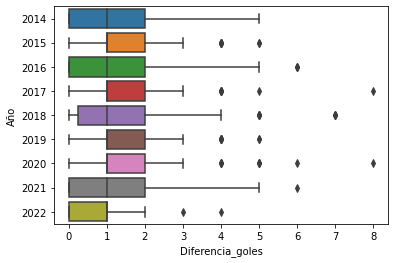
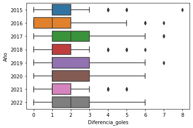
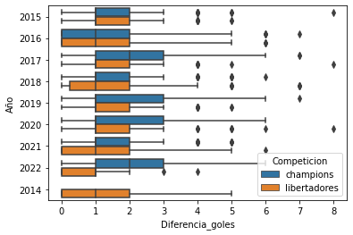
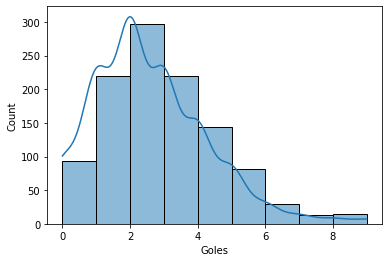
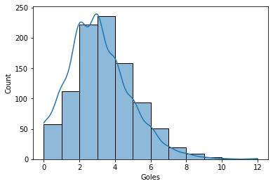
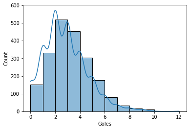
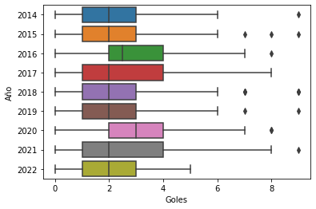
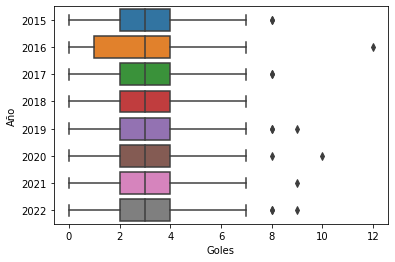
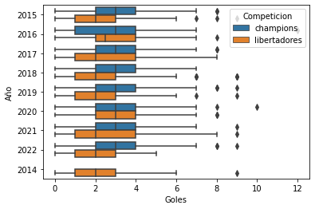

1. ¿Que resultado es más común? ¿Hay una gran diferencia dependiendo de la competicion?
Con los datos que obtuvimos podemos ver los 4 resultamos más comunes por cada competición y en total.
Copa Libertadores
| Resultado |
Frecuencia |
| 1-0 |
129 |
| 1-1 |
128 |
| 2-0 |
110 |
| 0-0 |
93 |
Vemos que en la Copa Libertadores el resultado más común es el 1-0. Además, podemos notar que en esta competencia no
hay tanto dinamismo en los resultados.
Champions League
| Resultado |
Frecuencia |
| 1-1 |
89 |
| 2-0 |
79 |
| 2-1 |
76 |
| 1-2 |
76 |
Ahora, con la Champions League vemos que el resultado más común es el 1-1. Y, podemos ver que hay más dinamismo en
estos resultados.
Ambas Competiciones
| Resultado |
Frecuencia |
| 1-1 |
217 |
| 1-0 |
198 |
| 2-0 |
189 |
| 2-1 |
166 |
Vemos en esta tabla los resultados más comúnes en total de ambas competiciones, siendo el más común el 1-1.
2. ¿Que resultado y diferencia de goles es el más comun por cada año?
Copa Libertadores
| Año |
Resultado |
Diferencia |
| 2014 |
1-0 |
1 |
| 2015 |
2-0 |
1 |
| 2016 |
1-1 |
1 |
| 2017 |
1-0 y 1-1 |
1 |
| 2018 |
1-0 |
1 |
| 2019 |
2-0 |
1 |
| 2020 |
3-0 |
1 |
| 2021 |
0-0 |
1 |
| 2022 |
1-1 |
0 |

Notamos que en la Copa Libertadores los resultados son similares, excepto por el año 2020 que el resultado más común
fue de 3-0 y que el año 2021 el resultado más común fué 0-0.
Champions League
| Año |
Resultado |
Diferencia |
| 2015 |
2-1 |
1 |
| 2016 |
1-0 |
1 |
| 2017 |
1-1 |
1 |
| 2018 |
1-2 |
1 |
| 2019 |
2-0 |
1 |
| 2020 |
1-1 |
1 |
| 2021 |
2-0 |
1 |
| 2022 |
1-1 |
1 |

En cambio, en la Champions League los resultados son muy similares entre si.

Aquí podemos ver mejor la comparación entre ambas competiciones, siendo la Champions League una media mayor que la
Copa Libertadores.
3. ¿Cual es la densidad de los goles por partido?
Copa Libertadores

Podemos ver que el la Copa Libertadores hay un promedio de 1 a 3 goles por partido.
Champions League

En cambio, en la Champions League hay un promedio de 2 a 4 goles por partido.
Ambas Competiciones

Notamos, que en total también se cumple el promedio de goles por partido es de 2 a 4.
4. ¿Cual es el promedio de goles por año?
Copa Libertadores

Podemos ver que el la Copa Libertadores hay un promedio de 2 goles por partido en la mayoría de los años.
Champions League

En cambio, en la Champions League hay un promedio de 3 goles por partido en todos los años.
Ambas Competiciones

Ahora, podemos ver más facilmente la comparación entre las competiciones, donde se vé claramente que la Champions
tiene más goles por partido en todos los años.
5. ¿Cuál fue el promedio de goles por partido, por país?
| País |
Promedio |
| Inglaterra |
1.946844 |
| Alemania |
1.928287 |
| Mexico |
1.750000 |
| España |
1.675410 |
| Francia |
1.611465 |
Como podemos ver, 4 de los 5 países con mayor promedio de goles por partido son Europeos.
6. ¿Cuál es el promedio de goles por equipo?
Copa Libertadores
| Equipo |
Año |
Pais |
Promedio |
| Leon FC |
2014 |
Mexico |
2 |
| Juan Aurich |
2015 |
Peru |
2 |
| Atl. Mineiro |
2016 |
Brasil |
2 |
| Atl. Mineiro |
2017 |
Brasil |
2 |
| Palmeiras |
2018 |
Brasil |
3 |
| Liga Quito |
2019 |
Ecuador |
2 |
| River Plate |
2020 |
Argentina |
3 |
| Flamengo |
2021 |
Brasil |
3 |
| Atl. Mineiro |
2022 |
Brasil |
2 |
Vemos claramente que Brasil se ha llevado el mayor promedio de goles en 5 años. Y que, independiente del equipo el
promedio de goles es de 2 o 3.
Champions League
| Equipo |
Año |
Pais |
Promedio |
| Real Madrid |
2015 |
España |
3 |
| B. Dortmund |
2016 |
Alemania |
4 |
| Liverpool |
2017 |
Inglaterra |
4 |
| PSG |
2018 |
Francia |
2 |
| Salzburgo |
2019 |
Austria |
3 |
| Monchengladbach |
2020 |
Alemania |
3 |
| Ajax |
2021 |
Paises Bajos |
3 |
| Napoli |
2022 |
Italia |
3 |
En la Champions League vemos que no hay una tendencia por un país a llevarse los mejores promedios de goles por
equipo. Lo que sí hay que destacar que el promedio, a diferencia de la Copa Libertadores, es de 3 o 4 goles por
equipo.
7. ¿En cual competencia gana más el equipo local?
Siempre ha existido la "competencia" en donde influye más las hinchadas en el resultado del equipo local. Por lo que
calculamos las veces donde el equipo local gana su partido, teniendo así:
1. Copa Libertadores: el 50% de los partidos gana el equipo local.
2. Champions League: el 45% de los partidos gana el equipo local.
3. Equipos Chilenos: Calculamos que tanto influye para nuestros equipos jugar de local, siedo así el 39% de
los partidos resulta en un triunfo.
8. Con respecto a la Copa Libertadores. ¿Contra que paises pierde con más frecuencia los partidos los equipos
chilenos?
| Pais |
Frecuencia |
| Brasil |
27 |
| Argentina |
14 |
| Colombia |
7 |
| Ecuador |
5 |
| Bolivia |
3 |
| Paraguay |
4 |
| Uruguay |
3 |
| Peru |
1 |
Notamos que los equipos chilenos pierden principalmente contra los equipos brasileños y los equipos argentinos.
9. ¿Cuál es el resultado típico con el cual los equipos chilenos pierde?
| Resultado |
Frecuencia |
| 2-0 |
18 |
| 1-0 |
14 |
| 2-1 |
8 |
| 3-0 |
6 |
| 3-2 |
3 |
| 3-1 |
3 |
Vemos que los equipos chilenos generalmente pierden con un resultado de 2-0 o de 1-0.
10. ¿Cuales han sido las 5 peores derotas de los equipos Chilenos?
| Equipo Local |
Pais Local |
Equipo Visita |
Pais Visita |
Ganador |
Resultado |
Año |
Fase |
| Cruzeiro |
Brasil |
U. de Chile |
Chile |
Local |
7-0 |
2018 |
Grupos |
| Corinthians |
Brasil |
Cobresal |
Chile |
Local |
6-0 |
2016 |
Grupos |
| Cruzeiro |
Brasil |
U. de Chile |
Chile |
Local |
5-1 |
2014 |
Grupos |
| River Plate |
Argentina |
Colo Colo |
Chile |
Local |
4-0 |
2018 |
Grupos |
| U. de Chile |
Chile |
Internacional |
Brasil |
Visita |
0-4 |
2015 |
Grupos |
Notamos que 4 de las 5 peores derotas de los equipos chilenos han sido contra equipos brasileños.
Integrantes:
Vicente Garay
Matías Pineda
Benjamín Thareau